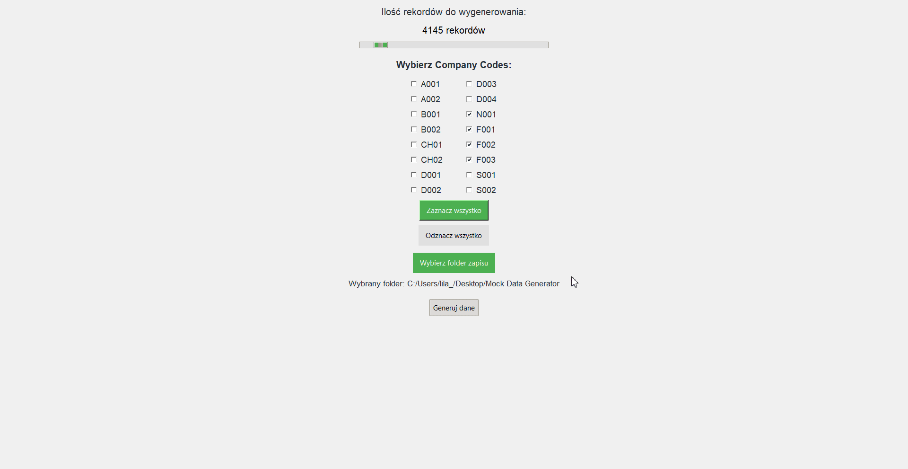
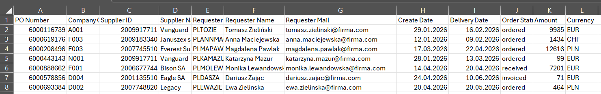
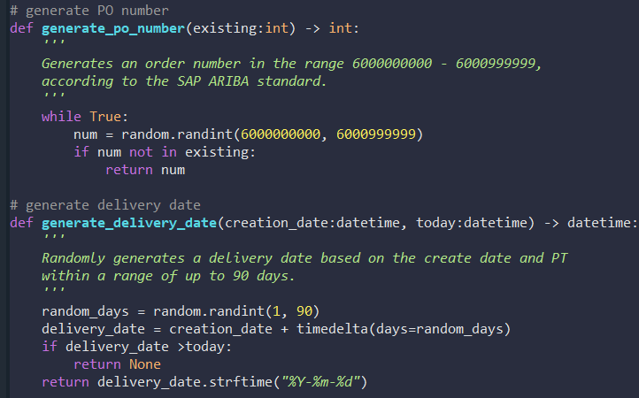

Problem
Procurement professionals moving into data analytics can’t practise on real corporate data – compliance rules, NDAs and GDPR stand in the way.
Solution
A Python tool that generates synthetic, production-grade PO datasets mirroring the data structure and business logic of SAP Ariba – with a GUI, a Windows .exe and an .msi installer.
Result
Up to 50,000 rows in less than a minute: a 100% compliant, realistic test environment ready for Power BI, Python, SQL or Excel.

Key features
- Realistic procurement data – POs, suppliers, users, companies and delivery windows that mimic SAP Ariba patterns
- Business-driven logic – lead times, approval flows, delivery dates, spend categories and supplier behaviour
- Regex-based validation of every generated field
- Excel output with 2 sheets – Ariba (purchase orders) and Invoices; realistic invoices that are never dated in the future
- Dynamic date range chosen in the GUI (up to 5 years back), 100 – 50,000 records
- GDPR-safe – no personal data, test e-mails use the reserved @example.com domain
- Reproducible script (seed 42), unit tests with pytest and a Dockerfile
Executable & MSI installer
The project grew from a Python script into a deployable Windows application: a stand-alone .exe built with PyInstaller and an .msi installer created with WiX Toolset. Anyone – including non-technical users – can install and run it without Python. Download the installer (v1.1.0).
Why Python instead of AI?
- The script is faster – a mock dataset with 50,000 rows takes less than a minute.
- It’s easy to change what I need – the number of rows, users, start date, delivery date and more.
- I do my projects from A to Z – AI helped me with company and user names, the rest is my own work. I prefer to understand the logic, so it can be repeated in another environment.
Screenshots


Debugging & lessons learned
- The initial “Failed to load Python DLL” error was caused by PyInstaller’s onedir mode.
- Switching to onefile resolved all dependency issues.
- WiX Toolset requires a strict two-step build (candle → light) executed in the same directory as the .wxs file.
- The final packaging pipeline is stable, reproducible and easy to maintain for future releases.